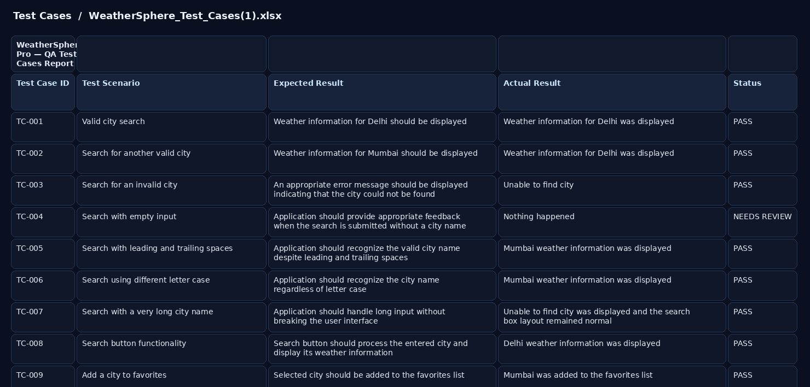
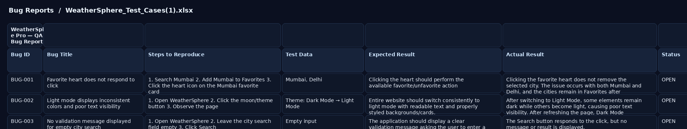
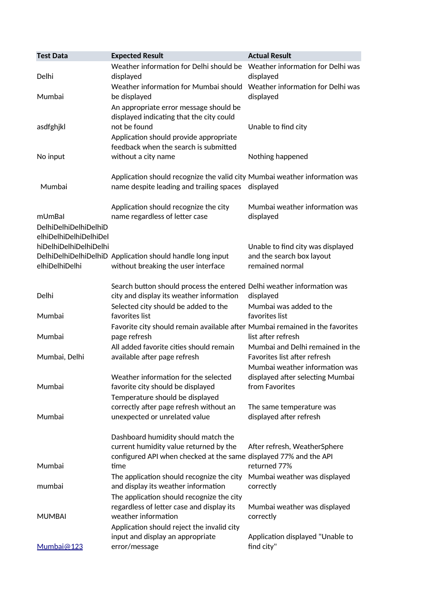
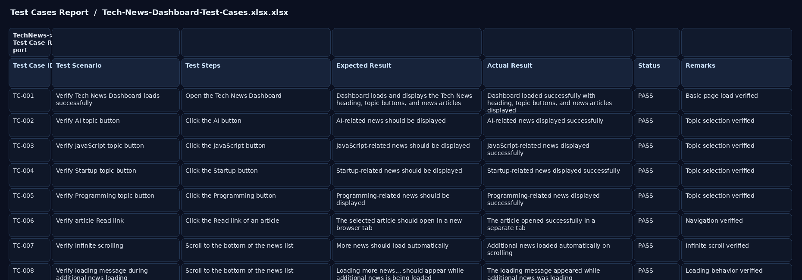
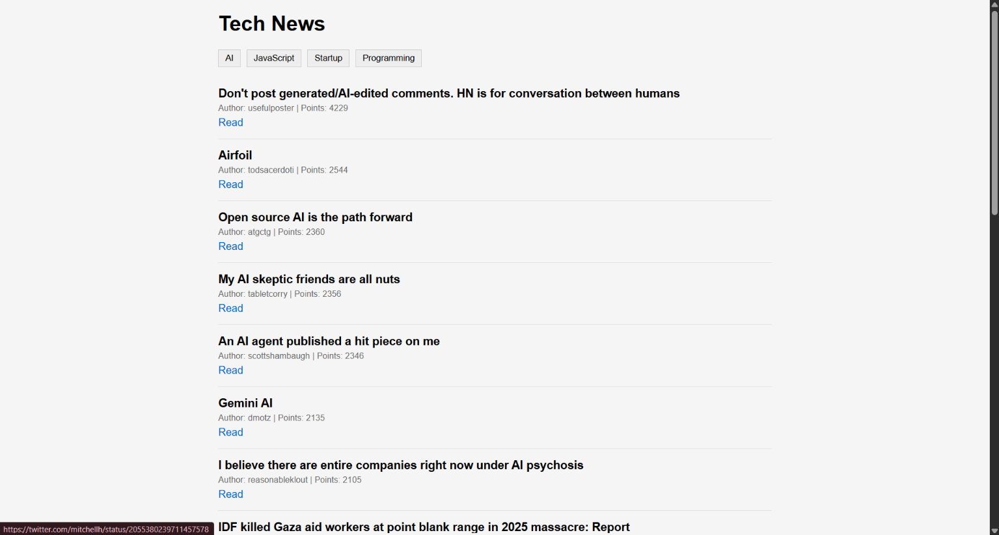

VIEW FULLQA Test Case Report
30 documented test cases covering city search, weather data, UI behavior, input handling and user workflows.
30CASES28PASS01FAIL01REVIEW
Download Excel artifact ↓I test web experiences, challenge edge cases, validate APIs and data, and turn unexpected behavior into clear, reproducible evidence.
FINAL-YEAR CSE · B.TECH 2023–2027
I'm a final-year Computer Science Engineering student focused on QA Engineer / Software Testing roles. My hands-on stack combines manual testing with API testing, SQL validation, Jira, Chrome DevTools, Git/GitHub and beginner Selenium automation.
I don't position myself as an automation expert yet. I position myself as a technically grounded fresher who can test systematically, document defects clearly and keep learning.
Selected evidence from actual QA work: test-case documentation, defect reporting, execution summaries, case reports and a live application. Existing spreadsheet artifacts remain downloadable from the repository.

VIEW FULL30 documented test cases covering city search, weather data, UI behavior, input handling and user workflows.

VIEW FULLThree documented defects with reproduction steps, expected vs actual results, severity, priority and status.
28 passed, 1 failed and 1 case requiring review across 30 executed test cases.
Download source Excel ↓
VIEW FULLProject scope, testing outcome, documented defects and QA conclusion in a recruiter-friendly report.
Download source Excel ↓
VIEW FULL30 documented test cases covering topic selection, article information, navigation, infinite scrolling, loading and responsive behavior.
30/30 planned cases passed with no confirmed defects in the completed testing cycle.
Download Excel evidence ↓
VIEW FULLPublic GitHub Pages deployment linked directly to the application and repository.
Responsive weather dashboard tested through a structured manual QA cycle covering functionality, UI behavior, input handling, responsive behavior and user workflows.
Technology news dashboard with topic browsing, article information, loading behavior, infinite scrolling and responsive UI. The documented QA cycle covered 30 test cases.
Hands-on REST API testing project using Postman and JSONPlaceholder, covering request methods, status codes and response validation.
Hands-on e-commerce QA project covering manual test execution plus beginner Selenium WebDriver automation with Python.
Selected capabilities demonstrated through hands-on QA work.
30 WeatherSphere + 30 Tech News + 6 Postman + 25 E-Commerce documented test cases.
WeatherSphere defects documented with severity, priority, reproduction steps and expected/actual results.
GET, POST, PUT, PATCH and DELETE validation with status, JSON fields, headers and Content-Type.
SELECT, filtering, sorting, COUNT, GROUP BY, JOIN and NULL validation for QA data checks.
Created, progressed, commented, retested and closed a defect through a Jira workflow.
Beginner hands-on: locators, login flows, negative validation, dropdowns, assertions and explicit waits.
KCC Institute of Technology and Management · Dr. A.P.J. Abdul Kalam Technical University (AKTU)
CGPA 8.05 / 10Foundation Level in Programming and Data Science completed.
FOUNDATION ✓ATS-friendly QA resume covering technical skills, four primary QA projects, education, certification and relevant strengths.
Open to QA Engineer, Manual Testing, Software Testing and Quality Engineering internships / fresher opportunities.